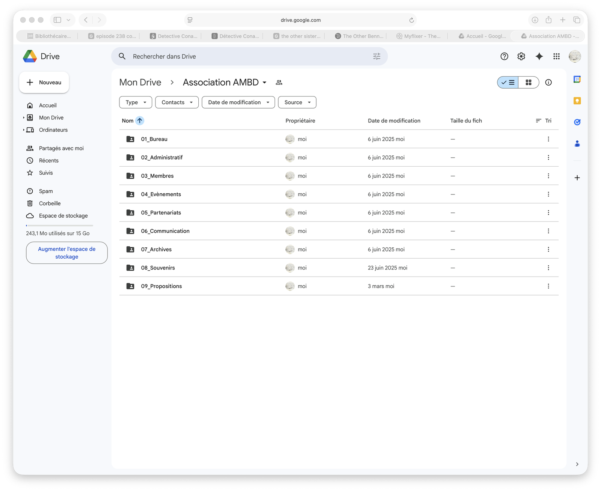
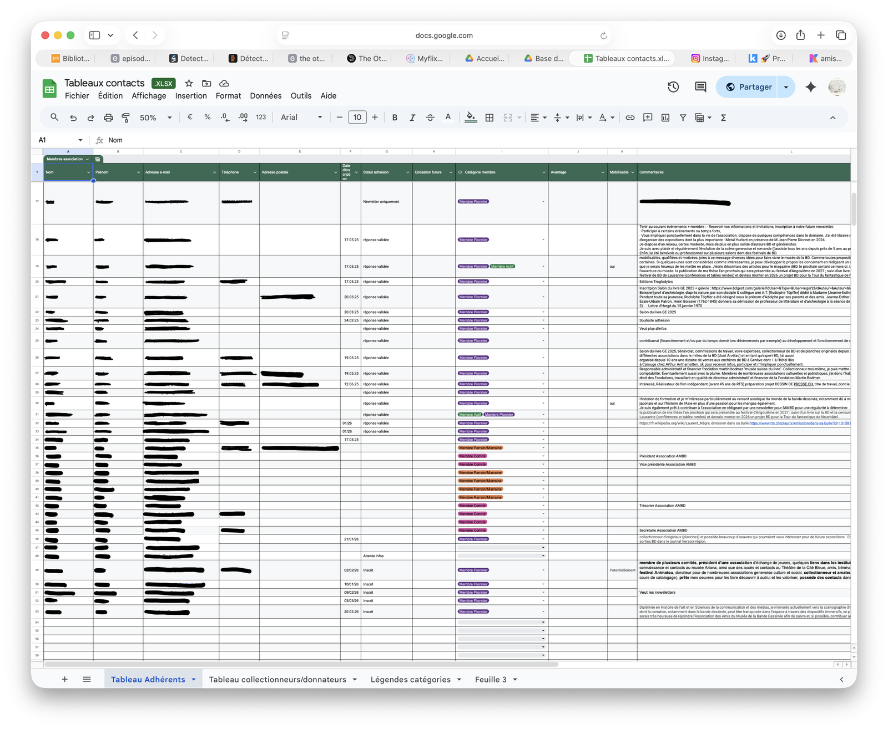
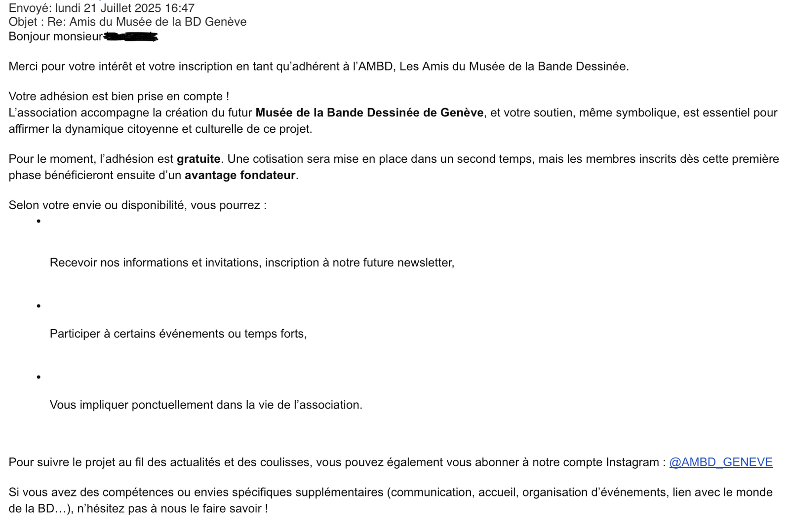
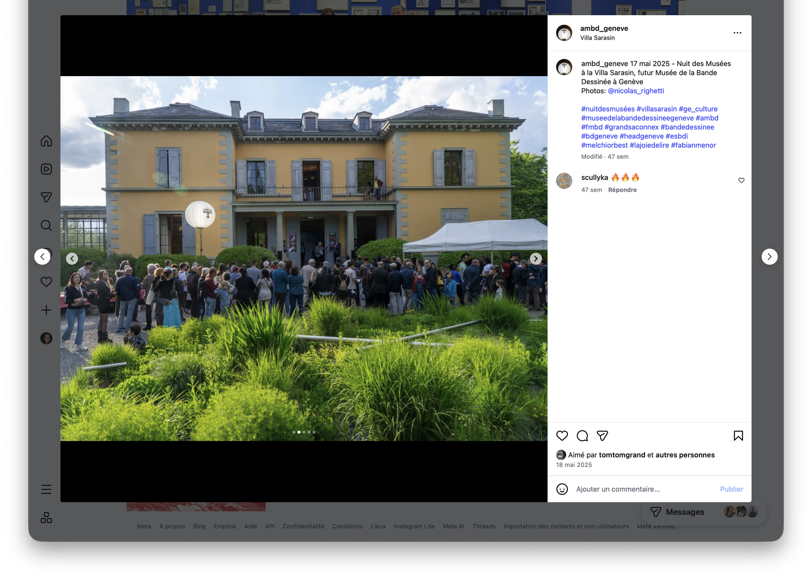

Coordination associative à l'AMBD
Participation à la structuration administrative, documentaire et communicationnelle de l'Association des Amis du Musée de la Bande Dessinée, dans le cadre d'un projet muséal en construction.
- Emplacement
- Association des Amis du Musée de la Bande Dessinée, Genève
- Date
- 2025 – aujourd'hui
- Rôle
- Coordinatrice
- Type de projet
- Coordination / organisation documentaire / projet culturel
- Contenu
- Organisation d'outils partagés, suivi administratif, communication et découverte de la construction d'un musée de l'intérieur
Structuration du Drive partagé
Je structure les dossiers de travail de l'association pour faciliter le suivi administratif, la coordination et la mise en commun des documents entre bureau, comité et fondation : une compétence organisationnelle et documentaire appliquée à un projet culturel en construction.
Ce travail de structuration ne relève pas seulement d'un rangement pratique : il accompagne la mise en place d'un projet collectif encore en construction, dans lequel la circulation des documents, la lisibilité des espaces de travail et la répartition des informations jouent un rôle important. Cette mission me permet de mobiliser des compétences documentaires dans un cadre associatif et culturel, au service d'une organisation plus stable et plus partagée.
Suivi des membres et relations
Je gère le fichier adhérents / contacts et le suivi des membres : tenue d'un tableau de suivi structuré, qualification des relations, suivi des adhésions—une compétence concrète de structuration des relations membres.
Ce suivi demande aussi une attention à la qualité des relations entretenues avec les membres, à la clarté des informations transmises et à la continuité du lien avec l'association. Il ne s'agit pas seulement de tenir un fichier, mais de structurer un ensemble de relations qui participent à la vie du projet et à son développement.
Rédaction et représentation
Rédaction de mails institutionnels, de documents de clarification organisationnelle, de messages de présentation de l'association et de réponses-types aux demandes d'adhésion. Je représente l'association dans une forme d'accueil institutionnel.
Cette dimension rédactionnelle me conduit à adapter le ton et la forme selon les interlocuteurs, tout en veillant à rendre l'organisation de l'association plus lisible. Elle me permet de développer une écriture professionnelle à la fois claire, diplomatique et structurante, dans un contexte où les documents et les échanges participent directement à la cohérence du projet.
Nuit des musées et communication Instagram
Je participe à la Nuit des musées comme première action de visibilité, de promotion et de contact avec le public. Je contribue aussi à la communication Instagram pour rendre visible le projet de musée et ses missions.
Cette première visibilité publique me montre aussi combien la communication d'un projet culturel en émergence demande de relier présentation, lisibilité et mise en confiance. Qu'il s'agisse d'un événement comme la Nuit des musées ou de la communication sur Instagram, l'enjeu est autant de faire connaître l'association que de donner une existence plus concrète au futur projet muséal.
Traces organisationnelles et communicationnelles




Retour analytique
Cette expérience m'apprend à découvrir une autre facette du secteur culturel, davantage tournée vers la coordination, la structuration et l'organisation d'un projet en train de se construire. Elle me montre que la médiation ne se limite pas toujours au face-à-face avec les publics, mais qu'elle peut aussi passer par le travail documentaire, la circulation de l'information, la rédaction, la clarification des rôles et la mise en visibilité d'un projet collectif. Elle renforce chez moi l'intérêt pour les espaces où documentation, coordination et culture se rejoignent de manière concrète.